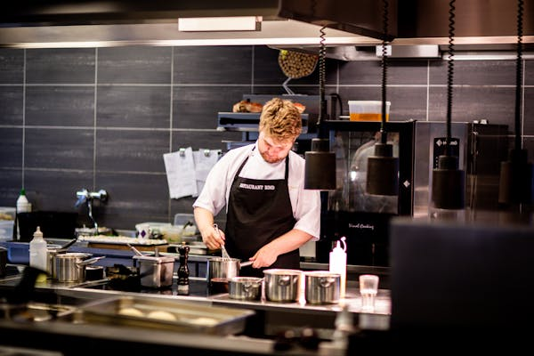
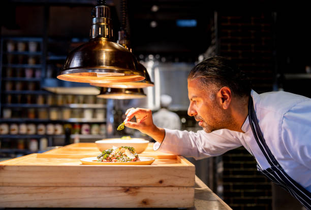
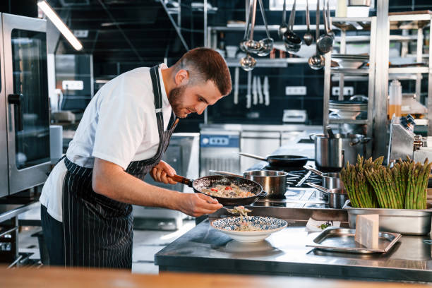

En el corazón del sabor y la tradición nace Fogo & Brasa, un restaurante que celebra la esencia del fuego y la parrilla.
Inspirado en las técnicas ancestrales de cocción a las brasas y en la pasión por los ingredientes de calidad, Fogo & Brasa ofrece una experiencia culinaria única, donde cada plato está pensado para despertar los sentidos.
Desde cortes selectos de carne hasta vegetales asados con maestría, nuestro menú combina autenticidad, sabor y un ambiente cálido que invita a compartir.
Brindar a nuestros clientes una experiencia gastronómica excepcional, basada en la tradición del fuego y la parrilla, utilizando ingredientes frescos y de alta calidad,
en un ambiente acogedor y con un servicio que refleje pasión, hospitalidad y compromiso con la excelencia.
Ser reconocidos como un referente en cocina a las brasas a nivel nacional, destacando por nuestra autenticidad, innovación culinaria y calidez humana,
creando momentos memorables que reúnan a las personas en torno al fuego y al buen comer.
Nuestro Equipo
Contamos con un equipo especializado en diferentes cocinas, cada apasionado con su profesión y buscando encantar a cada uno de nuestros clientes.

Alain Ducasse
Profesional que dirige y coordina la cocina, elabora menús, y supervisa al personal de cocina

Martin Berasategui
Segundo al mando, quien actúa como apoyo directo del jefe de cocina.

Yoshiro Murata
Profesional en cocina asiatica.
Anne Sophie
Profesional en cocina mediterránea
Clare Smith
Conocimientos profundos de técnicas culinarias, panadería y pastelería